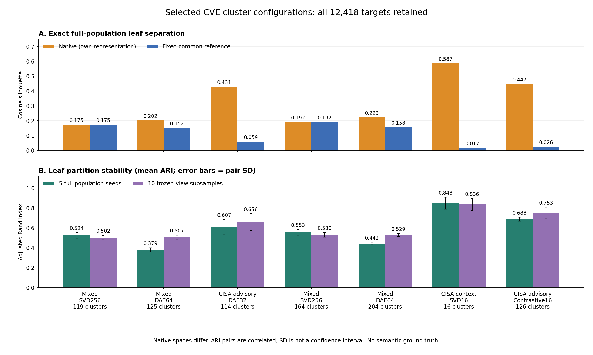

1차의 동일 입력 5종에 raw 16/32차원, DAE 16차원, 이웃 대조학습 16차원을 추가했습니다. 기존 표현 3종에는 K=192/256/384를 추가했습니다. 새 평면 후보는 129개이며 1차 210개와 합쳐 339개 조건입니다. 입력·군집 배정은 모든 후보에서 12,418개를 유지합니다.
같은 탐색 질의점에서 1차 최고 점수를 .005 이상 개선한 후보만 전수 평가·안정성 검증으로 승격합니다. 전역 잎 군집을 그대로 유지하는 프로토타입 계층 방식이며, 여섯 해상도 번호와 실제 부모 간선 깊이를 구분합니다. 저장 모델의 실제 깊이는 최대 6입니다. 높은 native 점수를 다른 공간의 점수와 혼용하지 않습니다.
[
{
"criterion": "reference_gain",
"old_search_score": 0.1824779431804509,
"new_search_score": 0.20067850505757837,
"improvement": 0.018200561877127458,
"promoted": true,
"representation": "current_mix_raw256_seed42"
},
{
"criterion": "trained_reference_gain",
"old_search_score": 0.1599202810051744,
"new_search_score": 0.17193694257874437,
"improvement": 0.012016661573569981,
"promoted": true,
"representation": "current_mix_dae64_seed42"
},
{
"criterion": "native_gain",
"old_search_score": 0.4359060504597121,
"new_search_score": 0.5755821282056024,
"improvement": 0.1396760777458903,
"promoted": true,
"representation": "cisa_context_raw16_seed42"
},
{
"criterion": "trained_native_gain",
"old_search_score": 0.4359060504597121,
"new_search_score": 0.4480324111196047,
"improvement": 0.012126360659892588,
"promoted": true,
"representation": "cisa_advisory_pool_neighbor16_seed42"
}
]
Balanced-prefix audit: Earlier balanced raw16/raw32 controls retained only the first mixed-source view. They are not evidence of two-view fusion. Corrected balanced raw conditions were tested separately. None of the four promoted configurations in this table depends on that raw-prefix interpretation.
| 선택 기준 | 표현 | 잎 군집 수 | Native 전수 Silhouette | Reference 전수 Silhouette | CVE 수 |
|---|---|---|---|---|---|
| reference_gain | current_mix_raw256_seed42 | 164 | 0.1918 | 0.1918 | 12418 |
| trained_reference_gain | current_mix_dae64_seed42 | 204 | 0.2226 | 0.1577 | 12418 |
| native_gain | cisa_context_raw16_seed42 | 16 | 0.5866 | 0.0172 | 12418 |
| trained_native_gain | cisa_advisory_pool_neighbor16_seed42 | 126 | 0.4474 | 0.0256 | 12418 |
selected/*/cve_assignments.jsonl에 모든 CVE의 배정이 있습니다. full_population_metrics.json은 12,418개 전체 질의점과 전체 비교 대상을 사용한 지표입니다. stability_summary.json은 초기값 5회와 표현 고정 재표집 10회의 ARI입니다. 반복 실행 쌍은 서로 독립 표본이 아니며 분산·분위수를 신뢰구간으로 해석하지 않습니다. 의미·악용 가능성·VEX 정확도는 검증하지 않았습니다.